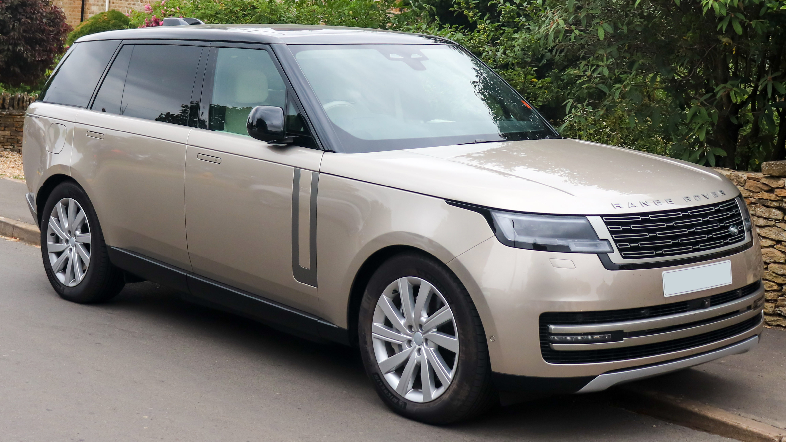

RANGE ROVER AUTO BIOGRAPHY
RANGE ROVER AUTOBIOGRAPHY
 The Rover Company (originator of the Land Rover marque) was experimenting with a larger model than the Land Rover Series in 1951, when the Rover P4-based two-wheel-drive "Road Rover" project was developed by Gordon Bashford.[3] This was shelved in 1958 and the idea lay dormant until 1966, when engineers Spen King and Bashford set to work on a new model.[4]
Road Rover prototypes
Surviving Road Rover Series I and II prototypes from 1955 and 1958 at the British Motor Museum
The first Range Rover prototype was built in 1967 with plate number SYE 157F. The design of the Range Rover was finalised in 1969. Twenty-six Velar-badged engineering development vehicles were built between 1969 and 1970 and were road registered with the number plates YVB151H through to YVB177H.[5]
Though being chassis no. 3, YVB 153H is believed to have been the first off the production line as a vehicle in that colour was urgently required for marketing. (The Range Rover with chassis no. 1 was a green model with the registration "YVB 151H",[6] and is now on exhibition at Huddersfield Land Rover Centre, Huddersfield, West Yorkshire). The Velar name was derived from the Italian "velare" meaning to veil or to cover.[7] Range Rover development engineer Geof Miller used the name as a decoy for registering pre-production Range Rovers. The Velar company was registered in London and produced 40 pre-production vehicles that were built between 1967 and 1970.[7] Conveniently the badging could be made up utilising existing letters from the word "Land Rover".
The Range Rover was launched in 1970.[8] In the early 1970s, the Musée du Louvre in Paris exhibited a Range Rover as an "exemplary work of industrial design".[9]
In 1971, ex-Cream drummer Ginger Baker used the unproven Range Rover to drive from Algeria to Lagos, Nigeria, to set up a recording studio and jam with Fela Kuti. Predating the Paris-Dakar rally the subsequent documentary is replete with such terrain, documenting the vehicle's endurance.[10]
In 1972, the British Trans-Americas Expedition became the first vehicle-based expedition to traverse the Americas from north to south, including traversing the roadless Darién Gap. The specially modified Range Rovers used for this expedition are now on display in the British Motor Industry Heritage Trust collection at Gaydon, Warwickshire.
Range Rover sub-brands have been launched. In 2004, Land Rover debuted the Range Rover Sport, based on the Land Rover Discovery platform. Later models received the latest Range Rover platform. In 2011 came the Range Rover Evoque, and in 2017 the Range Rover Velar (re-using the name of the very first, pre-production Range Rovers).
The Rover Company (originator of the Land Rover marque) was experimenting with a larger model than the Land Rover Series in 1951, when the Rover P4-based two-wheel-drive "Road Rover" project was developed by Gordon Bashford.[3] This was shelved in 1958 and the idea lay dormant until 1966, when engineers Spen King and Bashford set to work on a new model.[4]
Road Rover prototypes
Surviving Road Rover Series I and II prototypes from 1955 and 1958 at the British Motor Museum
The first Range Rover prototype was built in 1967 with plate number SYE 157F. The design of the Range Rover was finalised in 1969. Twenty-six Velar-badged engineering development vehicles were built between 1969 and 1970 and were road registered with the number plates YVB151H through to YVB177H.[5]
Though being chassis no. 3, YVB 153H is believed to have been the first off the production line as a vehicle in that colour was urgently required for marketing. (The Range Rover with chassis no. 1 was a green model with the registration "YVB 151H",[6] and is now on exhibition at Huddersfield Land Rover Centre, Huddersfield, West Yorkshire). The Velar name was derived from the Italian "velare" meaning to veil or to cover.[7] Range Rover development engineer Geof Miller used the name as a decoy for registering pre-production Range Rovers. The Velar company was registered in London and produced 40 pre-production vehicles that were built between 1967 and 1970.[7] Conveniently the badging could be made up utilising existing letters from the word "Land Rover".
The Range Rover was launched in 1970.[8] In the early 1970s, the Musée du Louvre in Paris exhibited a Range Rover as an "exemplary work of industrial design".[9]
In 1971, ex-Cream drummer Ginger Baker used the unproven Range Rover to drive from Algeria to Lagos, Nigeria, to set up a recording studio and jam with Fela Kuti. Predating the Paris-Dakar rally the subsequent documentary is replete with such terrain, documenting the vehicle's endurance.[10]
In 1972, the British Trans-Americas Expedition became the first vehicle-based expedition to traverse the Americas from north to south, including traversing the roadless Darién Gap. The specially modified Range Rovers used for this expedition are now on display in the British Motor Industry Heritage Trust collection at Gaydon, Warwickshire.
Range Rover sub-brands have been launched. In 2004, Land Rover debuted the Range Rover Sport, based on the Land Rover Discovery platform. Later models received the latest Range Rover platform. In 2011 came the Range Rover Evoque, and in 2017 the Range Rover Velar (re-using the name of the very first, pre-production Range Rovers).
RANGE ROVER VOGUE

The first-generation Range Rover was produced between 1970 and 1996. It was available only in a 2-door body until 1981. (Before then, 4-door models had been produced by specialist firms).
Unlike other 4x4s such as the Jeep Wagoneer, the original Range Rover was not designed as a luxury vehicle. It was up-market compared to preceding Land Rover models, but the early Range Rovers had fairly basic, utilitarian, interiors with vinyl seats and plastic dashboards that were designed to be washed down with a hose. Convenience features such as power steering, carpeted floors, air conditioning, cloth/leather seats, and wooden interior trim were fitted later.
The Range Rover was a body-on-frame design with a box section ladder type chassis, like the contemporary Series Land Rovers. The Range Rover used coil springs as opposed to leaf springs, permanent four-wheel drive, and four-wheel disc brakes. The Range Rover was originally powered by various Rover V8 engines and diesel engines.